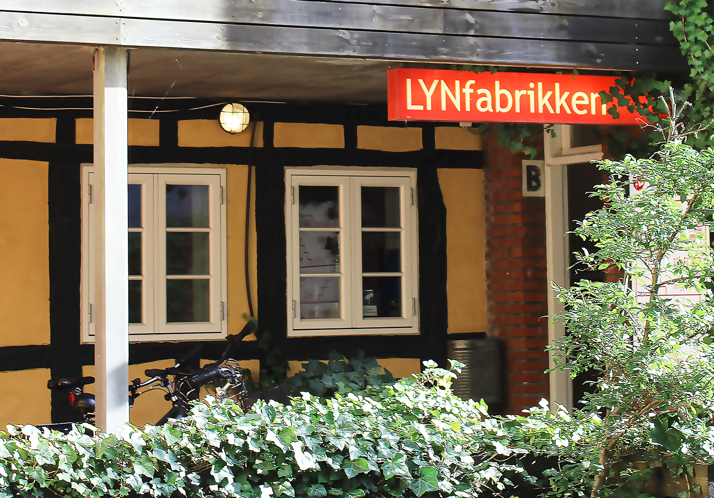
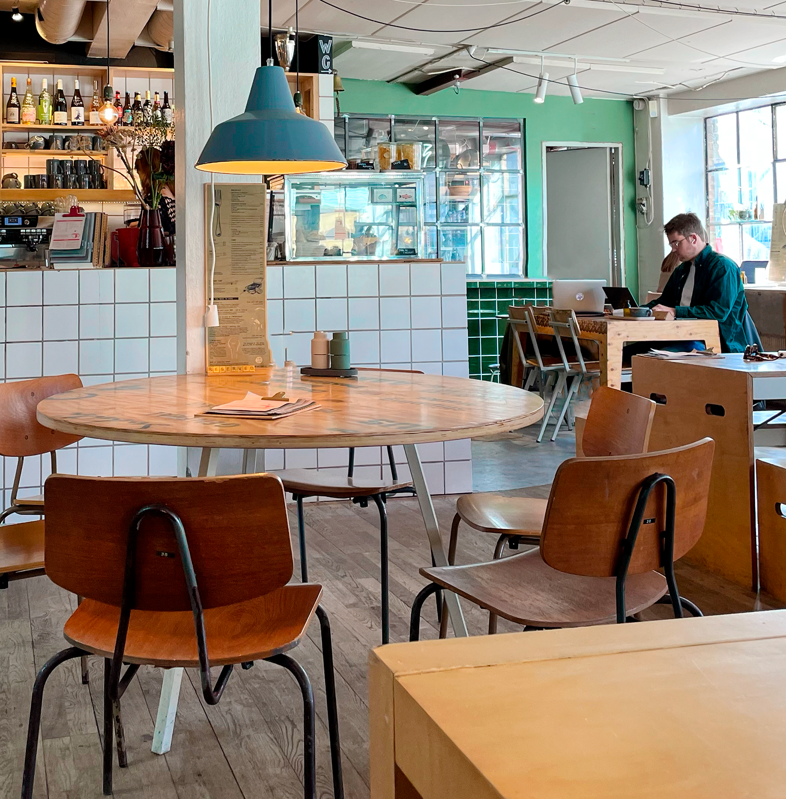

En guide til Aarhus' bedste studiecaféer
Du kan roligt glæde dig til at bruge vigtige år af dit liv som studerende i Aarhus. Byen har mere end 50.000 studerende og tilbyder derfor masser af muligheder for dig, der skal i gang med at læse – det gælder blandt andet et stort udvalg af biblioteker, caféer og læsesale, hvor du kan finde dig til rette og få mest muligt ud af din selvstudie- og forberedelsestid.
Jeg har sammensat en lille guide til mine favoritlæsesteder her i Aarhus, hvor jeg elsker at mødes med en studiegruppe eller sidde alene og fordybe mig. Bonus: alle tre steder på listen har gratis adgang.
Dokk1 (”Dokken” på aarhusiansk) - Hack Kampmanns Plads 2, 8000 Aarhus C
Første stop på listen er nok også den mest kendte af dem alle, nemlig Dokk1 – et kulturhus ved Aarhus Havn med udsigt over vandet og Aarhus Ø. Her finder du ud over store læseområder med masser af studiepladser også borgerservice, bibliotek og DR Sporten for bare at nævne få. Generelt er Dokk1 et sted, du gerne vil kende som kommende aarhusianer.

3 hurtige om Dokk1
- Gratis wifi og strømstik ved siddepladserne
- Højt til loftet og rummeligt med mulighed for at sidde ved skriveborde og højborde og slænge sig i loungestole eller sofaer
- Mulighed for at medbringe madpakke eller købe i caféen i stueetagen
Besøg Dokk1’s egen hjemmeside www.dokk1.dk og læs mere eller følg med på instagram: @dokk1aarhus
Dome of Visions eller Domen – Inge Lehmanns Gade 22, Pier 2, 8000 Aarhus C
Kun et stenkast fra Dokk1 får du samme beroligende vandudsigt, men en helt anden atmosfære. Domen er et kuppelformet drivhus indrettet med grønne planter, masser af træ og indbydende siddepladser, hvor du har mulighed for at kombinere arbejde med et afbræk fra det pulserende byliv.
Et lille obs - Domen bliver også brugt til kulturelle arrangementer, alt fra Lindy Hop til plante croquis. Og selvom den gode stemning er i top, ville jeg nok vælge en anden studiecafé at slå mig ned på lige de dage.
Domen har desværre ingen hjemmeside, men på deres instagram er det nemt at følge med i deres månedlige aktiviteter – måske der også er noget for dig.

Ikke desto mindre får du her 3 hurtige om Domen
- Gratis wifi og mulighed for at få strømforsygning
- Altid lyst og dejlig varmt
- I den tilhørende non-profit café kan du købe billig (meget billig) økologisk kaffe og snacks, samtidig med at du støtter godtgørende formål og Aarhus medborgerskab

LYNfabrikken - Vestergade 49b, 8000 Aarhus C
Hvis du søger noget lidt mindre og mere urbant, er LYNfabrikken det rigtige for dig. På øverste etage i en gammel fabriksbygning finder du en kaffe- og vinbar indrettet med langborde og store industrielle vinduespartier – lysindfaldet er skønt!
Indgangen til LYNfabrikken ligger i en baggård til Vestergade, og tro det eller ej, men mere skulle der ikke til, før at jeg gik lidt forvirret rundt, første gang jeg besøgte baren... Men fortvivl ikke - jeg bliver utrolig nemt stedsforvirret, og med Google Maps og caféens egne farvestrålende vejvisningsskilte, er jeg ikke i tvivl om, at du finder hurtigt frem. Så tør jeg godt love, at det er den mulige forvirring værd.
Udover servering ved bordene og ”good vibes only”, bliver du fra LYNfarbrikkens tagterrasse også forkælet med den mest charmerende udsigt over tagene i Aarhus Centrum og til kunstmuseet Aros´ ikoniske regnbue. Det er lidt af en grøn oase oppe på taget, der naturligvis også er indrettet med siddepladser og samme musik som indenfor, til både læsning og hygge.
Du gættede det! Her er 3 hurtigt om LYNfabrikken
- Gratis internet og de obligatoriske stikdåser – de hænger endda ned fra loftet
- Indrettet med fokus på at skabe et læsevenligt miljø – her er bordene brede
- Stort udvalg af kolde som varme drikke og lette måltider
Find mere på LYNfabrikkens egen kanaler her: www.lynfabrikken.dk og @lynfabrikken
Selvom det uden tvivl er lettere sagt end gjort, er det en sund vane at sætte rammer for, hvornår du studerer, og hvornår du holder fri. Tro mig, den balance er jeg stadig ved at læ-re, men jeg har erfaret at bare det, at komme ud af lejligheden og sætte en slags ”arbejdsstation” op i nye omgivelser, hjælper på både min koncentration og motivation.
Studiecaféerne, jeg har introduceret dig til ovenfor, udgør kun et lille håndpluk af de mange caféer, læsesale, biblioteker, you name it, i Aarhus, som egner sig supergodt til lektielæsning, projektarbejde og meget mere.